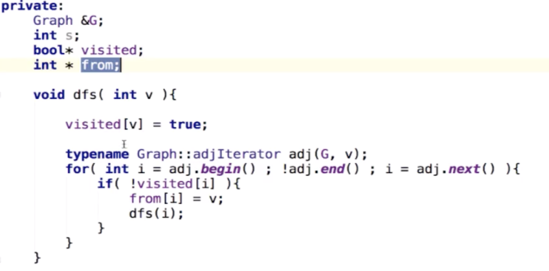
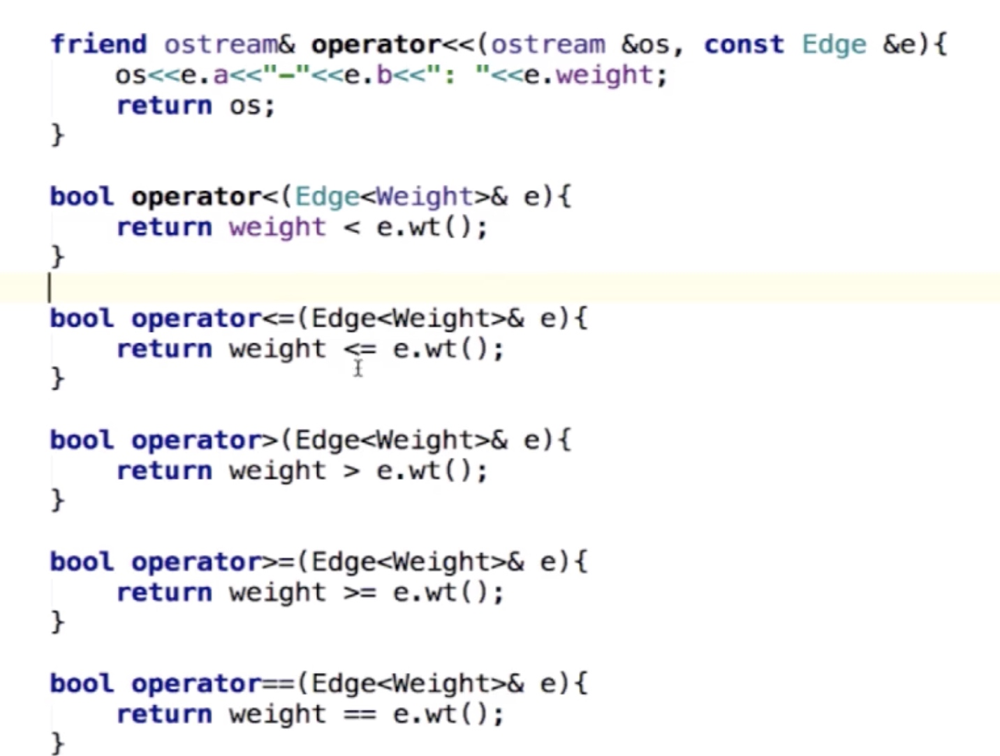
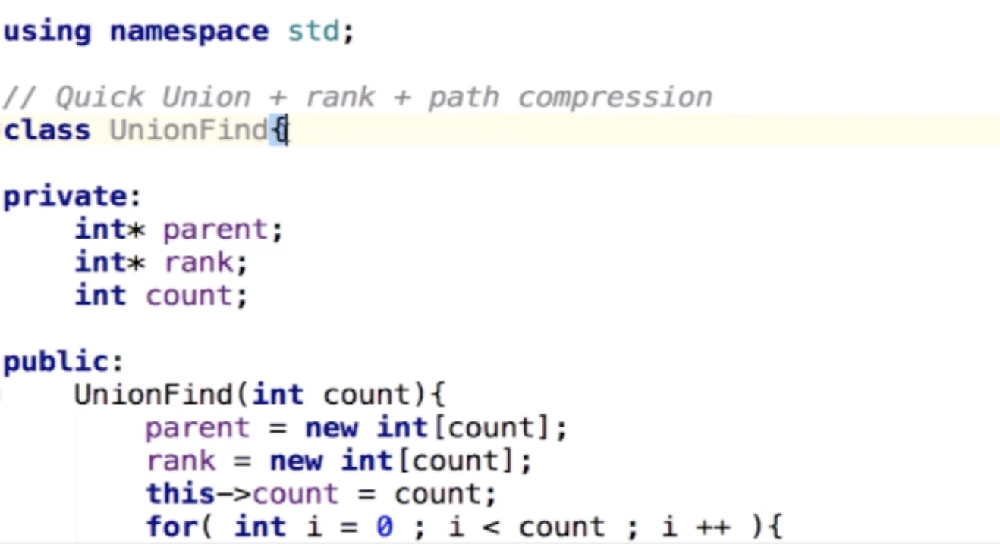

7-10章：Basic Things of Graph - 最短路径、寻路、连通分量、最小生成树
7-10章：Basic Things of Graph - 最短路径、寻路、连通分量、最小生成树
Theory
- 无向图、有向图
- 有权图、无权图
- 简单图(没有指向自身的路径-自环、没有平行路径)
- 图可以是不连通
- 连通图：在无向图中，若任意两个顶点vi与vj都有路径相通，则称该无向图为连通图。
- 强连通图：在有向图中，若任意两个顶点vi与vj都有路径相通，则称该有向图为强连通图。
- 连通网：在连通图中，若图的边具有一定的意义，每一条边都对应着一个数，称为权；权代表着连接两个顶点的代价，称这种连通图叫做连通网。
- 生成树：一个连通图的生成树是指一个连通子图，它含有图中全部n个顶点，但只有足以构成一棵树的n-1条边。一颗有n个顶点的生成树有且仅有n-1条边，如果生成树中再添加一条边，则必定成环。
- 最小生成树：在连通网的所有生成树中，所有边的代价和最小的生成树，称为最小生成树。
- 稀疏图-Sparce Graph(节点很多，但是每个节点出度较小)；稠密图-Dense Graph(每个节点出度比较大，连通图中大多数节点)
- 建立图复杂度：
- 最短路径算法复杂度：
Implementation
.
图的表示
邻接矩阵： 用于稠密图，易于遍历和获取对应两个节点是否有一条路径
邻接表：用于稀疏图，节省空间，但是需要遍历才能知道是否两点间存在一个路径O(n)，即不太容易处理平行边的情况
数据结构：
- 节点 n, 边 m
- bool directed
- 图的存储
- 邻接矩阵：vector<vector
> g, 都初始化成 false
- 创建时不管使用二维向量还是二维数组，都要对其所有元素（$n^2$）进行初始化，邻接矩阵中初始化为 false；时间复杂度是 $O(n^2)$;此外还要从图描述文件中读取数据填入图中，一共有 m 条边信息，时间复杂度是 $O(m)$，初始化图和读取填充图是两个过程，时间复杂度是$O(n^2 + m)$
- 邻接表：vector<vector
> g, 初始化成空：g.push_back(vector ()) - 创建时不管使用二维向量还是使用数组+链表，都需要对n 个顶点创建链表或者vector，时间复杂度为$O(n)$，而从图描述文件中读取m 条边到图中，需要$O(m)$,这两个阶段时间复杂度为:$O(n+m)$；
成员函数：
- ReturnVertex（V()）; ReturnEdge(E())返回 n 和 m 的值
- AddEdge,添加一条边
- 对于稠密图(不考虑自环和平行路径的简单图)，用邻接矩阵表示，如果是无向图，添加路径时，因为可以在 O(1)内知道是否存在路径(vector 和数组的随机访问特性)，所以先判断是否存在路径，存在就不添加了，如果要添加，无向图对应对称的节点也要添加路径；有向图就不需要添加对称路径了；
- 对于稀疏简单图，用邻接表表示，如果是无向图，添加路径时，因为判断两个节点间是否存在路径需要 O(n)时间，所以就先不管这个了，而是等所有路径添加完，再进行一次去重处理（把平行边删除），并且因为是无向图，所以对称的位置也要添加路径；还要判断如果两个节点相同，则也不添加路径，去除了自环的情况(邻接矩阵也有自环的情况)；
- HasEdge，判断两个节点间是否已经有了路径，对于邻接矩阵表示的，可以在 O(1)时间内知道两个节点间存不存在路径，而对于邻接表表示的，需要 O(n)时间内才能知道
遍历图（通过一个点遍历所有邻边），邻接表遍历邻边更加高效，不存在无用的空间；可以封装一个 iterator 类，用于隐含图 g 并且能打印出图
深度优先遍历：从一个节点开始，找其邻边，然后从其邻边再找邻边，等找到最后某个点没有邻边，就往上逐层退回，退回一层后，在那一层找还没有遍历过的边，如果都遍历过了，再往上退，直到第一层所有节点都遍历过了为止; 深度优先遍历可以用于判断有向图中是否存在环；
DFS:
DFS 的应用，求连通分量，下图有3个连通分量
求一个图的连通分量，单独封装成一个Component类（因为与图相关的算法可能会涉及一些其他的数据和函数，封装在一起结构比较好）求连通分量，需要设置一个标志位，可以设置一个 visited 数组，表明一个节点是否 visited 了，需要传入一张图Graph &G，还需要设置连通分量计数ccount；
这里在遍历时有个循环，与二叉树遍历原理是一样的，只不过二叉树只有两个分支，所以是把两次分别写出来了，而图节点可能有很多分支，不便一个个列出来；
关于两个节点是否相连，可以通过查询邻接矩阵和邻接表来进行判断，还可以在计算连通分量时将属于一个连通分量的节点都置成同一个 ID,然后根据两个节点是否 id 相同来判断是否相连；
使用并查集只能得到两个节点是否相连，使用图论算法可以知道路径是什么；
广度优先遍历也可以求连通分量；
相邻节点迭代器内部类
广度优先遍历
- 类似树的广度遍历，使用到了一个队列，从 0 开始，入队，然后出队，并将 0 的所有邻居节点加入队列，在出队队列中的第一个元素，再把这个元素的所有邻节点加入队列，直到最后队列为空，说明这个图就遍历完了；
- 广度优先遍历中先遍历到的节点距离起始点的距离一定小于等于后遍历到的节点，通过记录这个距离或者使用 from 数组记录这个距离（父节点）就能求出这个节点到起始点的最短路径（适用于无权图，因为广度遍历通过设置 visited 位来表示是否访问过的，一个节点只访问一次，正是利用了先访问节点比后访问节点距离起点近的特点来求的无向图的最短路径；而有权图可能需要反复访问某个节点，从而比较哪个路径最短，所以不能用广度优先遍历来求）；使用 ord(order)数组记录到达某个节点的跳数，较小的路径也较小（对于无权图来说）；
- 求最短路径，封装成一个ShortestPath 类，数据结构如下：
- （kcy待移动）对于有权图，封装一个 Edge类，表示边的权重信息
- 这里不需要定义函数，当成结构体使用即可；
图的读取
- 封装 ReadGraph 类
- 实现 ReadGraph 函数：ReadGraph(Graph &graph, const string &filename)，graph 是要读取到的那个图数据结构(使用前已经创建了一个实例)，filename 是存储图数据的文件
- 因为图只有两个变量，顶点和边，所以可以定义两个 string，使用 getline 获取一行，再使用 stringstream 输入到这两个string变量中
寻路
- 寻路不同于通过广度优先遍历求最短路径，不需要 order 保存跳数，因为它只关注路径，不关注长短；
- 正是因为寻路不需要关注是否最短，通过深度优先遍历即可；
- 源节点到达某个节点是否有路，只需对该节点执行深度优先遍历，看看有哪些节点被标记为 visited 即可；这个类似于求连通分量，但是多个个 from 数组，用于保存了路径信息；
- 封装一个 Path类
- 数据结构：
- 
- 通过 path（）求得源节点到 w 节点的路径，因为 from 记录的是父节点信息，所以必须由 w 节点开始进行路径查找，这样得到的是反向的路，所以先读取到栈中，再正向输出即得正向路径；
有权图最短路径
上面通过广度优先遍历可以得到单源最短路径（一个节点到其它所有节点的所有最短路径），但这个只是针对无权图的；对于有权图，需要使用别的算法进行最短路径的求解；
1. 有权图
有权图存储： 邻接矩阵中在有权图中存放权值即可；邻接表需要增加边的权重
- 这里有权重的边使用 Edge 类来表示了，那么没有值的部分就要使用 NULL 来表示，因为 C++中实例化对象时实际上是为类分配空间，并赋给一个指针；
Edge 类封装
- 类定义
- 一些运算符的重载，对类进行大小比较
- 
2. Dijkstra 单源最短路径算法
- 图中不能有负权边
- $O(E(log(V)))$
- 松弛操作
- 在有权图中，0-2-1 路径比 0-1 路径要短，虽然看上去绕路了
- 算法原理：
- 如下图，第一轮循环，先遍历 0的所有邻节点，找到 到 2 最短路径是 2，然后再通过 2 遍历其邻节点，如果已有路径代价，更新之；这里 0->2 最短是 2，其它路径（比如0->1 和 0->3）都是大于 2 的，并且每一条边权重都大于 0，所以不可能通过松弛操作得到一个比 这个路径更短的路径（除非有负权边存在），此时可以说找到了从 0-2 的最短路径；
- 而对于到达 1 的路径，则不能说 5 就是路径的最小代价，因为此时0到达 1 节点的路径中有三种可能（先通过0->2，先通过0->3，或者直接从 0->1），其中第一种可能的路径代价为 2，比直接从 0-1 要小（从 0 的角度来看，暂时看不到 2->1 的代价），所以这种情况下是有可能通过松弛操作得到更短路径的，所以此时就不能说找到了从0-1的最短路径；所以对于第二轮循环通过上一步中找到的最短路径节点 2 开始遍历其所有节点，并更新其所有邻节点的路径代价；
- 此时发现从0到1有更短路径0->2->1，此时更新到达 1 节点的最短路径代价为 3，并更新 1 节点的父节点为 2，这就是松弛的过程；此时 0 到 1 代价为 3，而从0 到 节点3代价为 6，是大于 3 的，如果绕路到节点 1，也不可能比 0->2->1代价小，所以此时可以说找到了从 0 到 1 的最短路径：0->2->1.
- 第三轮循环，在上一步中找到最短路径的基础上，再遍历其所有邻节点，并更新路径代价；
- 这里的 marked 用于标示到达节点b是否是最短路径，假设这个路径是经由a过来的，当遍历完a的所有邻节点后，就会得出由 a 到 b 才是路径开销最小，此时就可以将节点 b marked 了。这个 marked不是必要，加上可以减少不必要的操作，因为有些节点的邻节点会包含这些被 marked 的节点，但是因为不存在负权边，所以绕回来并不会减少路径代价。
- 如下图，第一轮循环，先遍历 0的所有邻节点，找到 到 2 最短路径是 2，然后再通过 2 遍历其邻节点，如果已有路径代价，更新之；这里 0->2 最短是 2，其它路径（比如0->1 和 0->3）都是大于 2 的，并且每一条边权重都大于 0，所以不可能通过松弛操作得到一个比 这个路径更短的路径（除非有负权边存在），此时可以说找到了从 0-2 的最短路径；
- 算法实现
- Dijkstra 算法中主要有两个操作，找最小值和更新最短路径列表，可以使用 IndexMinHeap
- Dijkstra 类封装，图的遍历、寻路、连通分量、最短路径、最小生成树，都要定义一个起点 s
- 类提供的一些操作
- 类提供的一些操作
- Dijkstra 实现：
3. Bellman-Ford单源路径最短路径
- 负权环
- 对于上述 0->1->2->0是一个负权环（首先是一个环，其次这个环的总代价小于 0），每经过这个环一次路径代价就会减少一些，这种情况下为了求到达某个节点最短路径，需要不停的经过这个环，也即如果无限次经过，最短路径将会是负无穷，即不存在最短路径
- Bellman-Ford 条件：图中可以有负权边，但不能有负权环；但该算法不需要一开始就知道是否有负权环，如果有，它运行过程中会检测出来；
- 算法复杂度：$O（EV）$,算法复杂度很大；
- 一个结论：
- 如果一个图中没有负权环，那么从一点到另外一点的最短路径，最多经过所有 V 个顶点，有 V-1条边，否则，存在顶点经过了两次，即存在负权环；
- 证明：如果经过了 V+1个顶点，那么说明其中一个顶点被经过了两次，说明这个路径中包含一个环，而我们说这个路径是最短路径，而这个最短路径却要经过一个环(即经过一个环的路径是最短路径)，那么这个环一定是个负权环；这跟上面结论中假设图中没有负权环矛盾，所以不含无权环的图不可能经过V+1个顶点；
- 基于上述结论，Bellman-Ford 算法的原理是：
- 即首先找到 0到某个节点经过一跳的最短路径（这里不是真正的最短路径，只是在一跳时最短），然后进行松弛操作，看是否存在 2 跳最短路径，直到 V-1跳，确实找不到更短的了，此时才确定找到了到达这个节点的最短路径；
- 即如果进行第 V 轮松弛操作，还能找到更小路径，就说明存在负权环了
- 每次松弛操作要对E遍历一遍，时间复杂度是 O（E）级别的，需要经过 V 轮，所以时间复杂度是 O（VE）
- Bellman-Ford 算法实现
- 数据结构
- 算法其它操作
- 算法其它操作
- 算法实现：
- 时间复杂度分析：这里最外层for 循环的 V-1 轮循环是少不了的，且跟边的条数没有关系；里面的两个 for 循环，实际上并不是简单的 VE, 它实际上是要访问所有顶点的所有邻边，而边的总数为 E，去掉有些边可能会重复访问，但是整体上大体上还是 E 次操作，所以整体上这两层循环的时间复杂度在 $O(E)$级别；结合外层 V-1轮遍历，时间复杂度为$O(VE)$.
- 补充：
- 对于 Bellman-Ford 算法，因为不能肯定当前找到的那个节点就是最短路径（只是暂时最短的路径，有可能通过负权边松弛操作，找到更短路径），必须经过 V 轮遍历后才能确定，所以没有 Dijkstra 中的那个 marked数组，所有节点都可能多次访问；
- 上面算法中松弛操作需要 V轮，实际上不需要这么多，可以进行优化
- 对于无向图，如果存在一条负权边，肯定会存在负权环，所以如果判断无向图没有负权环，那么肯定也就没有负权边，此时转用 Dijkstra 算法求解最短路径，算法时间复杂度会降低很多；因此，也可以说 Bellman-Ford 只能处理有向图，因为它是处理有负权边的算法，而含有负权边的无向图肯定含负权环，所以不能用 Bellman-Ford 算法，又对于无向图，如果不含负权边，就可以直接用 Dijkstra 算法了，时间复杂度还低很多；
- 数据结构
4. 最短路径算法总结和扩展：
- 这里实现的最短路径算法，并没有将 distTo初始化为∞，算法导论中是用的∞，在程序中∞一般是找一个很大的数来代替（比如整型最大值），如果这个数不好找，那这样就不好搞了，所以这里是使用了这个节点是否被访问过的标志位来代替，如果没被访问过，就类似于那个∞；
- 上面第一个条件就是看有没有到达过，后面就是看能否找到更短路径，如果 distTo 一开始初始化成∞，那么第一个条件就可以省略了；
- 所有对最短路径算法
- Floyed 算法，处理无负权环的图
- 时间复杂度：$O(V^3)$
- 最长路径算法
- 对于无权图，最短路径通过广度优先遍历即可求得，O(V+E)；而最长路径则是指数级的；
- 使用 Bellman-Ford 算法求最长路径，只需要把所有路径都取负，就把求最长路径转换成了求最短路径；注意，不能有正权环；
最小生成树
应用：因为是树，不含环路，可以找到最短的交通路线等。
切分定理
第一个版本实现（Lazy Prim）
算法复杂度：O(ElogE)
首先选中 0 节点，以其做起点做一个切分（环切），并找到最短的那条边，并将其加入到最小边候选中，因为要取最小的值，所以这里可以使用最小堆，将这四条候选边存入最小堆，然后找最小的边，只需要取出堆顶元素即可；这里找到最小的边是 0-7，所以 7 节点可以加入到红色阵营，成为最小生成树的一个节点；
接着以 (0,7) 作为新的起点进行切分并找到最短的边，这里实际上只要增加新节点 7 的邻边就可以了，因为 0 的邻边在之前就已经加入到堆中去了；
接下来找到 1 节点，并以集合(0,7,1)为整体进行切分，之后会再找到 2 节点，当对 （0,7,1,2） 集合进行切分时（在实际代码实现中，是对 2 节点邻边进行遍历的，因为 0，7，1 的邻边都已经在之前加入到堆中去了），实际上 0.17 和 0.52 是横切边，0.36 和 0.34 不是（因为其所连接的节点已经属于最小生成树了，lazy 的特点就在这里，这两条边仍然会加入最小堆，不对这个边进行删除，只不过在取最小边的值的时候发现它不是横切边，那么就抛弃它），0.26 也不是（因为这条边已经属于最小生成树）
对于下面这种情况，这样处理：此时从最小堆中取出的最小值是 0.29，但是它两端的节点都已经加入最小生成树了，此时丢弃即可，再取下一个最小值；
下图中红色节点是当前已经加入最小生成树的节点，蓝色节点是还未加入的节点，红色的边是最小生成树的边，绿色的边是在最小堆中的最小生成树候选边，灰色的边是从堆中取出但是发现对端节点已经属于最小生成树而丢弃的边；
最后，堆中不存在元素并且所有节点都加入最小生成树，算法结束
Lazy Prime 实现
最小堆
LazyPrimMST
包含一个最小堆，存储可能的候选边
包含 marked，区分红蓝阵营，标记一个节点是否属于最小生成树
mst 向量，存放筛选出来的最小的边，即最小生成树的边
mstWeight,保存这棵最小生成树的权重
Lazy Prim 算法首先访问 0 节点，在 visit 中会遍历 0 节点的所有邻边，并将其加入最小堆；然后进入 while 循环，从堆中取出最小值，如果两者都被 marked 了，说明对端已经加入了最小生成树，所以这个边不是横切边，此时不需要对这条边再做处理，继续下一次循环，找到对端没有加入最小生成树并且边权重最小的边，加入到最小生成树中（在 visti 访问某个节点时，那个节点就会被 marked）。接下来要找到边 e 两端的两个端点哪一个是没有被 marked 的，找到后要对那个节点进行访问，进行下轮循环；（Edge 类中含有两个节点a,b，e.v()和 e.w()就是获取这两个节点的成员函数）
visit 函数中要对访问的节点 marked，并将所有对端没有访问过（没有被 marked）的边加入到最小堆中
优化的Prime 算法
- 算法复杂度：O(ElogV)，使用最小索引堆，不仅堆操作由边的条数降低到了节点个数级别，而且边操作也减少了，判断出来不是横切边就丢掉了；
- 存储边到堆中时，只存储是横切边并且横切边中最短的那个；使用 IndexMinHeap;
- Lazy Prim 中使用的是最小堆，最多可能存储的边的个数有可能会达到图中所有边的条数，所以堆空间也要开那么多；
- 这里的 IndexMinHeap，只需要开节点个数的空间即可；每个空间保存的是与这个节点相连接的最短的横切边；
- 从 0 开始（0 处已经是最小生成树的节点，不需要存储内容），将与 0 相连的节点加入索引堆中，并且找到与索引 7 对应的边最短，此时 7 标红，再将 7 的邻边加入最小索引堆中，加入时发现 7-1 那条边是 0.19，而索引 1 节点处没有存放值，所以存入，接着 7-2 那条边是 0.34，并且在 2 节点处已经存入了值且比 0.34 小，所以 0.34肯定不是最小生成树的边，直接丢掉即可。后面继续将邻边加入最小索引堆，并找出最短的那条加入最小生成树；
- 算法实现
- 最小索引堆
- PrimeMST类，比 Lazy Prim 多了 edgeTo 向量，因为最小索引堆只存储节点相邻的边的最小权重，这里用edgeTo存放与每个节点相邻的最短的横切边，例如：edgeTo(w)存储的是从其父节点 v 到 w 的那条边；另外只要某个节点 marked 了，就说明这个节点肯定属于最小生成树；那什么时候某个节点会被 marked 呢？在访问某个节点的时候。那怎么就确认这个节点是最小生成树（最小）的一部分呢？因为这个点是通过比较其父节点所有邻边得到的边权重最小的那个节点；
- Prim：先访问 0 节点，visit 中将 0 节点所有邻边加入到索引堆中，从最小索引堆中取出最短边，将对端节点加入最小生成树，接着再访问更加入树中的那个节点的邻边，再将该节点所有邻边加入索引堆中，接着进行下次循环；
- visit 函数：这里 edgeTo 的判断就是上面说的如果某个堆空间没有存储值，就存入这个最短的边的值，如果之前存储了别的值，并且当前值比那个值小，就更新它，否则就保留原值；这里只需要确定这一条边权重最小即可，所以不需要累加之前路径的权重，只需要比较边 e 的权重是否小于已存储在索引堆中的同一索引下的边（由其它节点而来，具体来说，应该是当前访问节点的父节点被访问时，对那个父节点的所有邻边进行遍历时存入索引堆的）的权重即可
- 为什么有向图最小生成树不能用 prime 算法？
- 最小索引堆
Kruskal算法
Kruskal 算法效率比 Prim 算法要低，但是好处是实现相对来说简单一些，对于小图和快速实现一个最小生成树算法，可以使用 Kruskal 算法；
找寻所有路径中最短的边，这条边肯定是最小生成树中的边，因为总能找到一个切分，以这条边做横切边，它又最短，所以最短的横切边肯定属于最小生成树
下面例子中，先找到最小的边是 0.16，这个可以找到是 7 的一个横切边；接下来找到倒数第二小的是 0.17，它可以是 2 的横切边；只要这些边不构成环（树中不能存在环）
在进行上述操作之前，先对所有的边进行一次排序：O(ElogE)
找到的最短横切边两端的节点都是属于最小生成树的，都标记为红色
Kruskal算法重要的一点在于如何判断加入一个节点后是否构成了环，此时可以使用并查集（Union Find），例如查找1和3之间如果本来已经连在了一起，那么再把 1-3 这条边连上，必然会构成一个环；
- 
Kruskal 类实现：
- 首先，定义一个最小堆实现的优先队列，用于对所有的边进行排序并方便取出最短边,因为是针对无向图，所以每个边可能会存储两次，所以存入优先队列时进行判断，只有节点 number 较小的才会加入队列；然后定义并查集，将图中顶点读入，从堆中取出最短边，并使用并查集判断这两个节点是否已经连接，如果连接，说明加入这个边会导致环，所以什么都不做，进行下一轮循环，如果不会构成环，就把当前节点加入到最小生成树中，并在并查集中对这两个节点进行一次 union 操作；
- 首先，定义一个最小堆实现的优先队列，用于对所有的边进行排序并方便取出最短边,因为是针对无向图，所以每个边可能会存储两次，所以存入优先队列时进行判断，只有节点 number 较小的才会加入队列；然后定义并查集，将图中顶点读入，从堆中取出最短边，并使用并查集判断这两个节点是否已经连接，如果连接，说明加入这个边会导致环，所以什么都不做，进行下一轮循环，如果不会构成环，就把当前节点加入到最小生成树中，并在并查集中对这两个节点进行一次 union 操作；
总结
- 最小生成树算法比较
- 如果存在相等的横切边，此时图中存在不止一个最小生成树；
- Vyssotsky’s Algorithm
- 按任意顺序将边添加到生成树中，
- 在添加过程中形成环的话，就将环中权重最大的边删除，最终形成一棵最小生成树
- 缺点：要删除边，要探测环的存在，当前没有较好的数据结构来支撑这些操作，例如：在 Kruskal算法中提到的最小索引堆和并查集等
- prime 算法适用于无向图，kruskal 适用于有向图和无向图
- prime 算法适合求稠密图，kruskal 更适合求稀疏图
- 最小生成树算法比较